TEXTBOOK → WEB
从 PDF 教材页 → 网页课件：左边原页、配音朗读、交互演示。
教材来源：国家统编/人教版（ChinaTextbook 开源仓库）——告诉老师用了什么教材、哪一课、第几页。
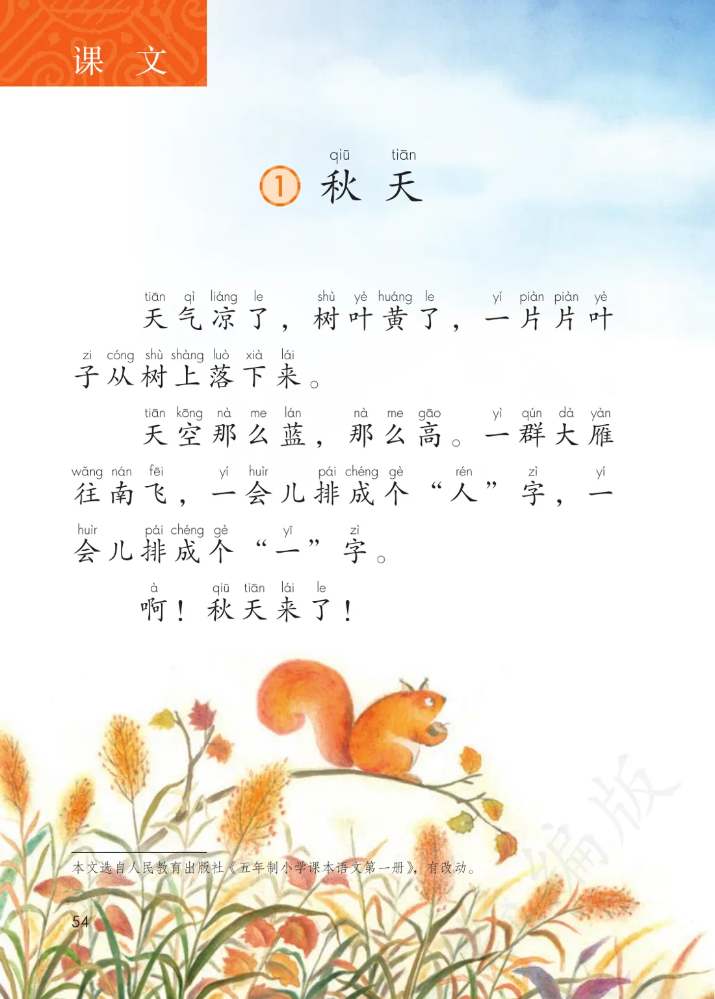
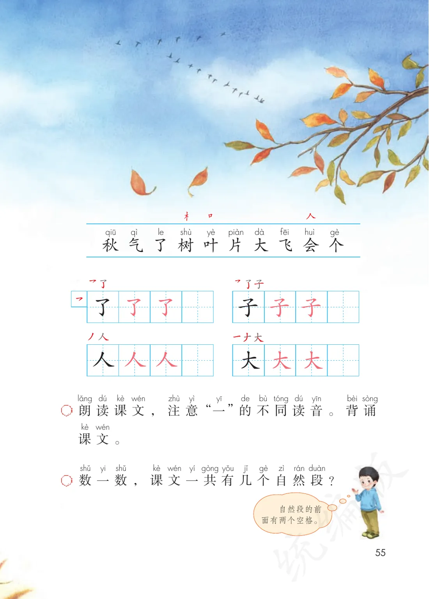
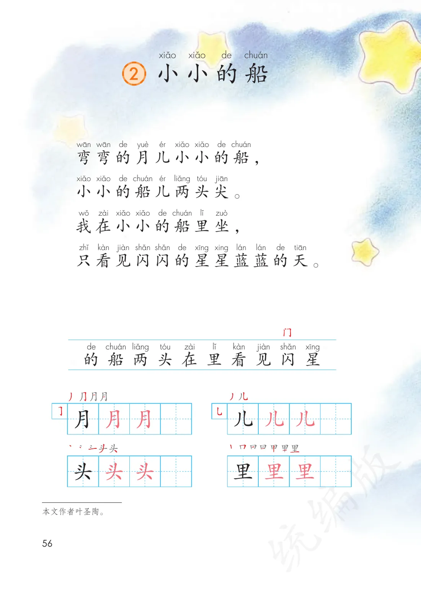
① 逐句跟读：点哪句读哪句（音频已切段）；②「一片片」「一群」量词点读讲解；③ 拖动大雁排成「人」字和「一」字的动画演示
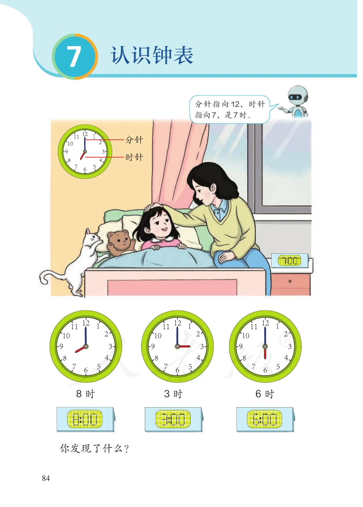
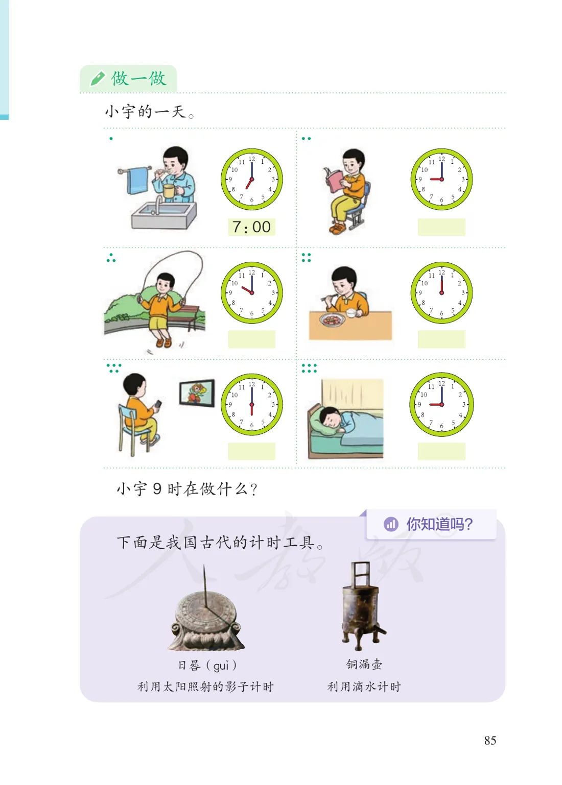
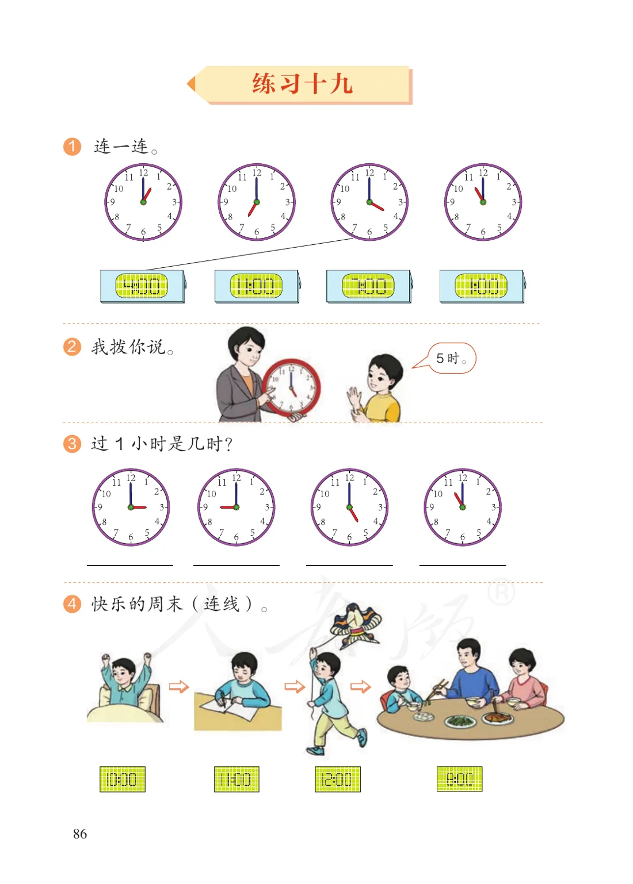
① 拖动时针分针，表盘实时显示时刻；②「你说我拨」游戏：语音报时学生拨；③ 生活连线：起床 7 时 / 午饭 12 时
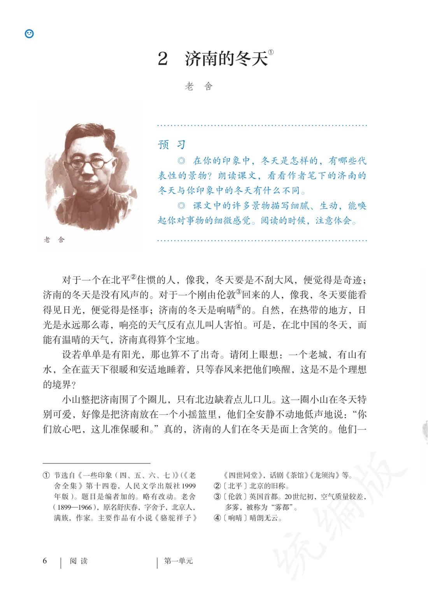
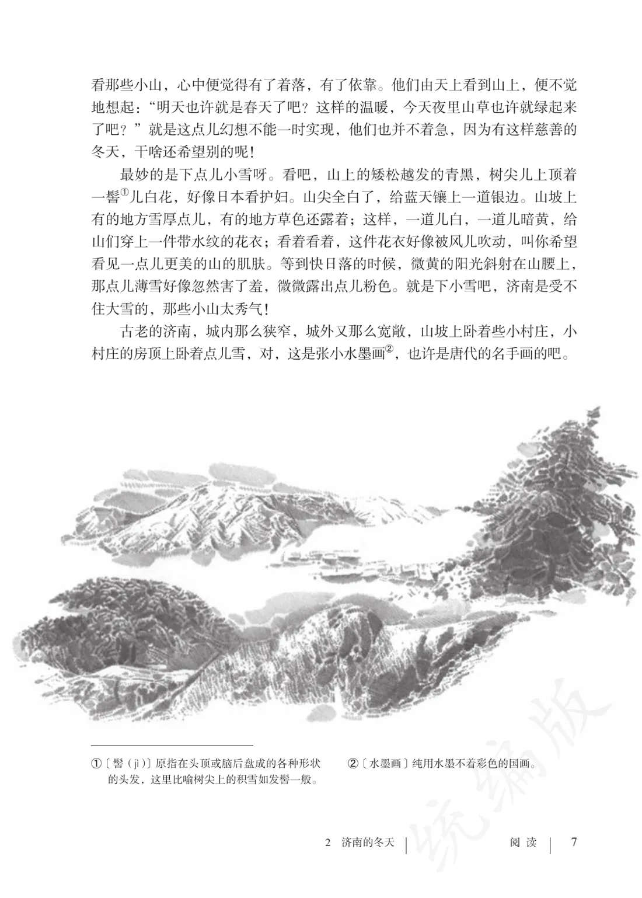
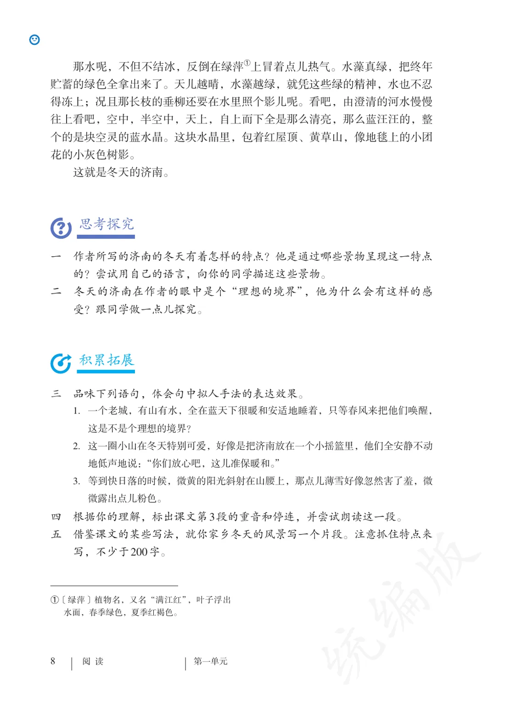
① 对比朗读：北平的风 vs 济南的温晴——切换两种背景音；② 词句点击批注：「响晴」「设若」的语境解释；③ 写法探秘：找出全文的比喻句做成卡片墙
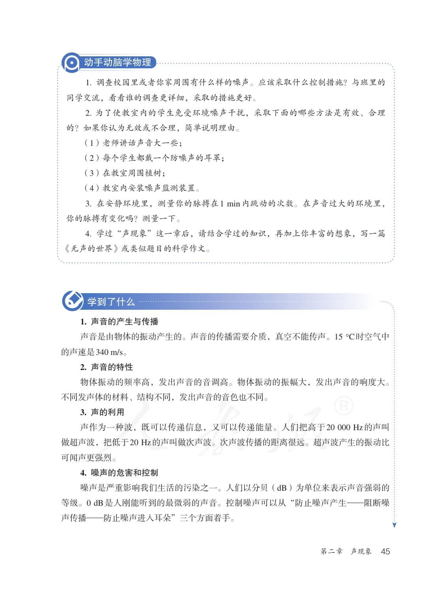
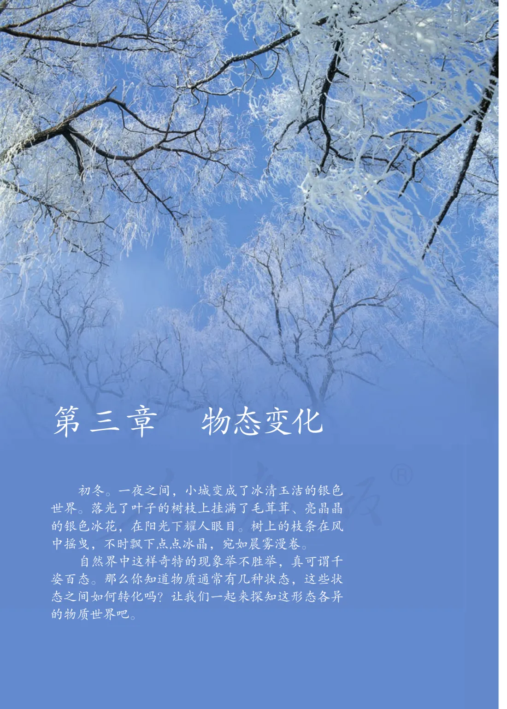
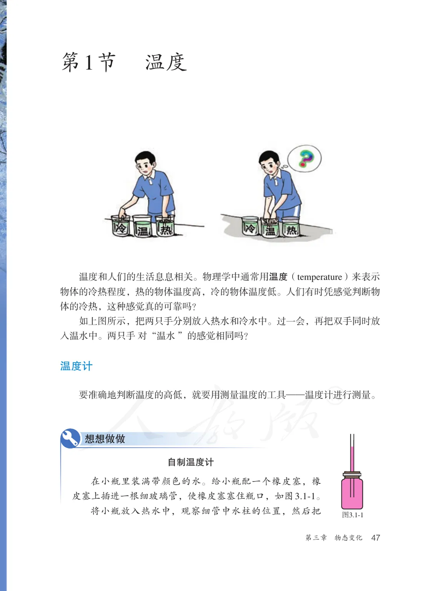
① 音叉振动模拟：滑块调频率，看波形变化；② 真空铃实验动画：抽气→声音变小；③ 传声介质连线：固体/液体/气体各举一例